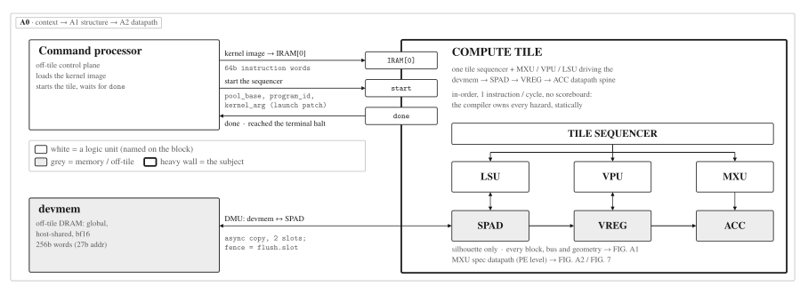

Lab 0: Course Introduction and Setup¶
ECE 4950/6950 AI Hardware, Fall 2026
School of Electrical and Computer Engineering, Cornell University
Lab 0: Course Introduction and Setup
Due: TBD, Fall 2026
Late submission: 4% penalty per day; cannot be late by more than 6 days.
Unverified against the RTL and ISA
This page was ported from a retired LaTeX handout without a technical
review. The claims listed below have not been checked against the current
RTL and ISA; they are the work list for the review tracked in
issue #385. The rest of
the page (motivation, the lab arc, the toolchain and ecelinux setup,
submission and grading) is pedagogy and needs no such check. The
authoritative sources are the ISA Reference and the
ABI Register Map.
Known wrong, not merely unverified. The instruction reference below, and
the kernel walkthroughs that use it, are written in a vec.* /
matmul.tile / dma.* / cast.* mnemonic namespace that matches no
generation of the ISA.
Unverified claims on this page.
- The 25-op instruction table and its semantics. Every row of the table
under "The instruction subset" is a claim: what the op does, its operand
classes, and its flags. The framing claims go with it: that the table is a
25-op subset of a larger set the hardware understands, that the hardware
implements variants beyond it, and the specific hex opcodes quoted in the
source comments (
vec.scale.col.bcastat0x1C,cast.load.vregat0x32) together with the "23-op core" framing. Note that the as-builtISA_VERSIONand the frozen spec version differ by design, so this reconciliation must name which one it is checking against. - Storage geometry. That the scratchpad holds bf16 tiles of eight values
per row; that the accumulator is the same physical on-chip memory viewed
as fp32, eight values per row; that a vector register is fp32 and holds
eight values; and that there are exactly three
castoperations bridging the two views. The SPM/ACC aliasing claim is the strongest structural claim on the page and is stated without hedge. matmul.tileflags. The transpose, accumulate and causal-mask flags, and specifically that the causal flag masks the upper triangle to negative infinity.- The per-phase kernel walkthroughs. The softmax sequence (including the
claim that one
vec.scale.immfolds the 1/sqrt(d_head) attention scale together with the log2(e) pre-scale), the LayerNorm sequence, the per-feature affine path (cast.load.vregplusvec.scale.col.bcast, and its claimed invariance to the row count between prefill and decode), the feed-forward and residual sequence, and theloop.begin/loop.end/flushcontrol claims. - The "Which instruction does each inference step" table, in particular the host/device work split (host does the embedding lookups and the final argmax) and the claim that no gather instruction exists.
- "What this reference leaves out". Each omission is an existence claim
about hardware: the int8 and int4/GPTQ matmul variants and their
dequantization step, the FP8 matmul, multi-index DMA, asynchronous DMA
control (non-blocking flag, slot tracking, masked fence, multi-slot
barrier), SiLU, the vector-register-only helper ops for a fused online
softmax, and an explicit halt distinct from
flush. - Board section. The ZCU102 /
xczu9egpart, the single compute tile fed over a PL-side DDR4 path, and the 100 MHz target with a 50 MHz first bring-up (issue #168). The section is already marked a placeholder. - Figure-borne claims. The system-context view is now
a0-context, a house-style TikZ figure (re-rendered fromfigures/tikz/a0-context.tex) that folds the host in above device memory; it supersedes the retired source-lessarch-l1-systemSVG. Its caption reads the copy-in / control-register-launch / copy-out interface off the drawing. - Suspect, check first. The lab-arc section says Lab 3's DMA "overlaps that movement with computation" and works up to double-buffering, while "What this reference leaves out" says asynchronous DMA control is out of scope for these labs and "a transfer blocks until it completes". Settle which is true before either is repeated elsewhere.
- Gap, not a contradiction. The instruction table lists
vec.mul.accas used by "LayerNorm and masking", and the summary table lists it in the LayerNorm sequence, but the LayerNorm walkthrough never says how the mean of squares is computed and novec.mul.accmasking use is described anywhere. Either a missing sentence or a missing op.
Introduction¶
These labs build a small neural-network accelerator from the inside out. The
datapath you build is a general tensor engine, but the workload it targets, and
that motivates its design, is decoder language-model inference: by the end you
will have written the hardware for a working tensor accelerator, run real
language-model computations on it, and served a model with it. This document
covers the parts that every lab assumes: what the accelerator is and how a host
program drives it, what each lab adds, how to set up the toolchain on the
ecelinux servers, and how you submit and are graded. Read it once before
Lab 1. Each lab handout points back here rather than repeating it.
The accelerator and its programming model¶
The accelerator is not a CPU. It does not fetch your program, manage a stack, or run an operating system. It is an IO-attached device: a separate piece of hardware that a host computer talks to over a bus, in the same way a host talks to a disk or a network card. You will see it described as the mininpu (Neural Processing Unit). The host runs ordinary software (in these labs, a Python script); the device runs only the fixed-function hardware you build.

Fig. 1.The host and the accelerator. The host copies tensors into device memory, writes a control register to launch a kernel, and copies results back. The device is a fixed datapath with its own on-chip memory; it never runs the host's software. Inside the device, one tile sequencer broadcasts to the LSU / VPU / MXU over the SPAD → VREG → ACC spine; the off-tile command processor loads and launches the kernel, and devmem is where the host's copies land. Lab 1 works entirely in simulation, so think of the host as the test program and the device as the hardware you are building; Lab 1 builds the VPU, Lab 2 the MXU, Lab 3 the DMA path.
A program drives the device in three steps.
- Copy data in. The host copies input tensors (the model weights
and the activations) from its own memory into the device's memory with a
block copy, a
memcpy. Nothing is computed yet; the data is simply moved to where the hardware can reach it. - Launch a kernel. A kernel is a short program written in the device's own assembly, the NPU instruction set. The host hands the device a kernel and signals it to start (in hardware terms, it writes a control register). The device executes the kernel against the data now resident in its memory. The host does not step through the kernel; it launches it and waits for a done signal. (Writing kernel text by hand is only needed in these labs for tiny examples; later labs introduce a compiler that generates it.)
- Copy results out. When the kernel finishes, the host copies the output tensors back from device memory into its own memory.
This is the whole interface: copy in, launch a kernel, copy out.
A kernel is a short sequence of NPU instructions. The hardware fetches
each instruction in turn, decodes it to decide which units act and on which data,
and executes it on the tensors in device memory. The instructions are simple and
specific to the work: there is one that sums the elements of a row down to a
single value (vec.rowsum), one that multiplies two vectors element by
element (vec.mul.acc), one that applies a nonlinear activation such as GELU
(vec.gelu), and, in the matrix unit, one that performs a tiled
matrix multiply. The set of instructions the hardware understands, together with
exactly what each one does, is its instruction set. The labs build the
hardware units that fetch, decode, and execute these instructions: Lab 1 builds
the unit that runs the vector instructions, Lab 2 the one that runs the
matrix-multiply instruction, and Lab 3 the one that runs the instructions that
move tensors in and out of the scratchpad.
Two properties of the device shape everything you build.
A fixed, specialized datapath. A CPU has general-purpose units that can run any instruction in any order. The accelerator instead wires up a fixed set of arithmetic units in the exact shape that neural-network math needs: lanes of multipliers and adders, reduction trees, and table-lookup units for nonlinear functions. Data streams through this datapath. There is no general-purpose instruction stream rerouting work at run time; the structure is committed in the hardware. This is what makes the device fast and small for its one job, and inflexible for anything else.
A scratchpad, not a cache. A CPU hides memory latency with caches: hardware automatically decides what to keep on chip, and your program is unaware of it. The accelerator has no cache. Its on-chip memory is a scratchpad (also called the SPM or SPAD), a plain addressable RAM that the program manages explicitly. Data is on chip only because the program copied it there, and it stays exactly where the program put it. Nothing moves on its own. This trades the convenience of a cache for predictability: because movement is explicit, the cost of every access is known in advance, which is what lets the hardware run a tight, overlapped schedule. "Data lives where you put it" is the mental model to carry through every lab.
What you build across the five labs¶
The labs build one accelerator step by step. Each lab leaves you with a larger, working subsystem; nothing built earlier is thrown away or replaced. The first three labs build the hardware; the last two program it. This page is Lab 0; the five handouts below are the labs proper, and each one links to its own page.
Fig. 1 is that accelerator seen from the inside: one tile sequencer driving the LSU, VPU, and MXU over the SPAD → VREG → ACC datapath spine, with the off-tile command processor and device memory (devmem) as its neighbours. Each lab fills in one part of it.
- Lab 1: the Vector Processing Unit (VPU). The VPU does the element-wise and vector math: multiply, add, the reductions that sum a row of numbers, and the activation functions. You build it in simulation, from a single dot product out to a tile loop, and finish by running a small neural-network layer through it. At the end of Lab 1 you have a complete VPU.
- Lab 2: the Matrix Unit (MXU). The MXU is a systolic array that does matrix multiplication, the bulk of the work in a transformer (cf. the systolic arrays in NVIDIA Tensor Cores and the Google TPU). You build it up from a single processing element, add it alongside the VPU, and run on the FPGA board. At the end of Lab 2 you have a VPU and an MXU.
- Lab 3: putting the units together (DMA). The DMA moves tensors between off-chip DRAM and the on-chip scratchpad, and overlaps that movement with computation. You start from a single-tile transfer and work up through multi-dimensional addressing to double-buffering. Adding it completes the accelerator. At the end of Lab 3 you have a VPU, an MXU, and a DMA: a full accelerator able to run decoder language-model inference on the board.
- Lab 4: writing kernels. With the hardware finished, you write compute kernels for it using Triton, a Python-based language for accelerator kernels (cf. Triton and FlashAttention), and a compiler that lowers them to the device's assembly. You implement a tiled matrix multiply and tiled attention with an online softmax and a causal mask, and run them on the accelerator you built.
- Lab 5: serving. Finally you build the software layer that serves a model: managing the key-value cache so that generating each new token reuses past work instead of recomputing it (cf. the paged attention used in vLLM and SGLang). You write the cache allocator and the request scheduler, and offload cache blocks to host memory when device memory runs short.
Lab 1 runs its hardware in simulation at a small scale and in FP32, so the work is getting the logic right; Labs 2 and 3 run on the board at full model scale, and Lab 2 is where the lower-precision storage that real inference uses comes in. Each subsystem is the production design; what differs between Lab 1 and the board labs is the scale it runs at and the number format it stores, not the design.
The worked model: GPT-2¶
These labs run GPT-2 small (124M parameters): 12 decoder layers, 12 attention heads, a model width of 768, and a feed-forward width of 3072. As a decoder it generates one token at a time, each token attending only to earlier positions.
One layer is two residual sublayers, each preceded by a LayerNorm (the
pre-LayerNorm arrangement): multi-head self-attention, then a feed-forward block
with a GELU activation. A forward pass embeds the input token and its position,
runs the stack of layers, applies a final LayerNorm, and projects to vocabulary
logits with a head whose weights are the (tied) input-embedding matrix. The token
and position embedding lookups and the final argmax run on the host; all
the arithmetic in between, including the layer matmuls and that logit projection,
runs on the device these labs build. These handouts are not
a transformer tutorial: this is the map, and each lab builds or programs one part
of it. The matrix multiplications (the projections, the attention scores, the
feed-forward) are the bulk of the work and are what the matrix unit accelerates;
the LayerNorms, the softmax inside attention, and GELU are vector work; the
key-value cache is what makes every token after the first cheap. Lab 1 first
builds the vector unit on a smaller, self-contained example, a small MLP over
sklearn's load_digits 8×8 handwritten digits (classes 0 through
7), a compact stand-in for the MNIST-MLP concept.
The toolchain¶
The course uses a small set of tools, introduced as you need them. The first labs build hardware and test it in simulation; the later labs program the finished hardware. The tools, and where each is used:
- Python: tests, numpy and torch reference oracles, kernel scripts.
- Verilator: open-source RTL simulator that compiles your SystemVerilog for simulation (Labs 1 to 3).
- cocotb: Python testbench framework that drives the simulation and defines the public tests (Labs 1 to 3).
- Surfer: waveform viewer for inspecting VCD dumps while debugging (Labs 1 to 3).
- The NPU assembler and instruction set: kernels are short programs in the NPU ISA; the assembler encodes them (Labs 1 to 3).
- The cost model (Lab 4): estimates a kernel's cycle count from its instruction mix, so you can reason about performance (for example, the memory-traffic benefit of the attention kernel) without a board run.
- Vivado: synthesis and bitstream generation for the FPGA (Labs 2 to 3).
- The ZCU102 board: the Xilinx Zynq UltraScale+ FPGA the accelerator runs on (Labs 2 to 5).
- mininpu-compiler: lowers Triton kernels to the NPU instruction set (Lab 4).
- Triton: the language you write accelerator kernels in (Lab 4).
- mininpu-runtime: the host-side driver that copies data to the device and launches kernels from Python (Labs 2 to 5).
Detailed tutorials for these tools are provided separately and are linked from the course page (to be added).
Setup: the ecelinux servers and git¶
The toolchain (the simulator, the cocotb test framework, and the synthesis tools
used in the FPGA labs) is pre-installed on the ecelinux servers. You do
your work there over ssh; you do not install anything locally. Each lab is
distributed as a per-student git repository in the course GitHub
organization, with the starter code already in it.
To start a lab, log in, load the course environment, clone your repository for that lab, and run the tests once to confirm everything builds:
ssh <netid>@ecelinux.ece.cornell.edu
source /classes/ece4950/setup.sh
git clone git@github.com:ece4950-fa26/ece4950-labN-<netid>.git
cd ece4950-labN-<netid>
make test
The first command logs you into the servers. The second loads the course
toolchain into your shell; run it once per login session. The third clones your
copy of lab N (replace N with the lab number and <netid>
with your NetID). The last command builds the design and runs the public test
suite. On a fresh checkout the build succeeds and the tests report failures,
because the parts you are meant to write are still empty. As you complete the lab,
the tests turn from failing to passing.1
Submission and grading¶
Submission is through git. You submit by committing your work and pushing
it to the main branch of your repository. Pushing is submitting;
there is no separate upload step and nothing to hand in on any other system. The
latest commit on main at the deadline is what is graded. At the deadline,
the course staff place an immutable git tag on your final commit; that
tag is the official graded snapshot. Do not move or delete it, and do not rewrite
the history it points to. The late policy stated on each lab handout is enforced
out of band.
Grading has two parts. The first is correctness, measured by a public
cocotb test suite that runs automatically when you push. These are the same tests
you run locally with make test, under the same pinned tool versions, so the
result you see on your machine is the result you are graded on. There is no hidden
test tier. The second part is a short written report (about one page) analyzing a
design trade-off specific to the lab; each handout says what to address. Include
the report as report.pdf in your repository.
The NPU instruction set: a kernel reference¶
The rest of this document is a reference for the instructions themselves. The sections above explain the programming model (the host copies data in, launches a kernel, and copies results out); this part lists the specific operations a GPT-2 inference kernel uses, and for each one explains what it does to the data. You build the hardware that runs these instructions across Labs 1 to 3: the vector operations in Lab 1, the matrix multiply in Lab 2, and the data-movement operations in Lab 3. Keep this section open while you work; it is a standing reference, not a problem set, so it has no exercises of its own.
A forward pass has two phases. Prefill runs the whole prompt through the model at once: the rows of a tile are the prompt tokens, so a tile carries M > 1 tokens. Decode then generates one token at a time, so a tile carries a single row. Both phases run the same instructions; prefill simply has more than one row per tile. Where the row count matters (the LayerNorm affine, in particular) the text says so.
The full accelerator understands more instructions than the ones here, including variants for lower-precision and quantized formats and for richer addressing. This reference is deliberately a subset: the operations a GPT-2 inference kernel actually issues, and nothing else. The last subsection, What this reference leaves out, names what is omitted and why, so the boundary is explicit.
Where the data lives¶
Every instruction reads and writes one of three on-chip stores. You need the distinction to read the operation table.
- The scratchpad (SPM). The plain addressable on-chip RAM described earlier, holding bfloat16 (bf16) tiles. Weights and activations are copied here from off-chip memory before a kernel runs. A tile is one row of eight bf16 values.
- The accumulator (ACC). A separate 32-bit floating-point (fp32) tile store inside the matrix unit, not a view of the scratchpad and not part of the vector register file. Matrix multiply writes its result here so that intermediate sums keep fp32 precision. A row is eight fp32 values.
- The vector registers (VREG). One shared, flat file of 256 fp32
registers (V0 to V255), each holding eight values. The register id is a
plain 8-bit number. A two-dimensional tile is simply eight consecutive
registers,
basetobase+7: you address a tile row by adding (base + row), and the base can be any value as long asbase+7is at most 255. There is no alignment rule. The reductions write their per-row result here (one value per row), and the per-row and per-feature scalars used by the broadcast operations are read from here.
The pattern throughout a kernel is: copy bf16 tiles into the scratchpad, widen
them to fp32 in the accumulator, compute in fp32, narrow the fp32 result back to
bf16, and copy it out. The three cast operations move data between the
bf16 and fp32 views.
This reference describes the general 16-bit-store, fp32-accumulate kernel shape.
The labs reach it in two steps. Lab 1 stays fp32 end to end (so the work is
getting the logic right, not the numerics). Lab 2 switches the 16-bit storage
format to BF16: the same matmul.tile op with only the storage format
changed, so the kernel structure above is unaffected.
The instruction subset¶
| Instruction | What it does in a kernel | Used by |
|---|---|---|
matmul.tile |
Multiplies two tiles, accumulating in fp32. Flags select transpose of the second operand, accumulate-into-destination, and a causal mask. | Every GEMM: QKV projections, attention scores, attention output, output projection, the two MLP layers, the logit projection. |
dma.load.spm |
Copies a bf16 tensor from off-chip memory into the scratchpad. | Loading weights and activations for a tile. |
dma.load.acc |
Copies an fp32 tensor from off-chip memory into the accumulator. | Loading a bias vector. |
dma.store.spm |
Copies a bf16 tile from the scratchpad back to off-chip memory. | Writing a layer output the host will read. |
cast.load |
Widens a bf16 scratchpad row to an fp32 accumulator row. | Bringing a loaded tile into the fp32 compute domain. |
cast.store |
Narrows an fp32 accumulator row to a bf16 scratchpad row. | Preparing a result to store or to feed the next matmul. |
cast.load.vreg |
Widens a 1-D bf16 scratchpad row (shape 1 × N) into an fp32 vector register of length N. | Loading a 1-D weight vector (the LayerNorm γ) into a register for a following vec.scale.col.bcast. |
vec.zero.acc |
Sets an accumulator tile to zero. | Clearing a destination before an accumulating reduction or matmul. |
vec.add.acc |
Adds two accumulator tiles element by element. | Residual add; adding a bias tile; the LayerNorm β shift. |
vec.mul.acc |
Multiplies two accumulator tiles element by element. | Elementwise products inside LayerNorm and masking. |
vec.rowmax |
Reduces each accumulator row to its maximum, into a vector register. | The stabilizing maximum in softmax. |
vec.rowsum |
Reduces each accumulator row to its sum, into a vector register. | The softmax denominator; the mean and mean-of-squares in LayerNorm. |
vec.sub.bcast |
Subtracts a per-row scalar (from a vector register) from every element of that accumulator row. | Softmax x − max; LayerNorm x − mean. |
vec.exp2 |
Raises 2 to the power of each accumulator element, using a lookup table. | The exponential in softmax (the input is pre-scaled by log₂e). |
vec.div.bcast |
Divides every element of an accumulator row by a per-row scalar from a vector register. | Dividing the softmax numerator by the row sum. |
vec.scale.bcast |
Multiplies every element of an accumulator row by a per-row scalar from a vector register. | Multiplying LayerNorm by the per-row 1/std. |
vec.scale.col.bcast |
Multiplies each accumulator column by a per-feature scalar from a vector register (the same scalar applied down every row). | The LayerNorm per-feature γ affine, applied across the M rows of a prefill tile. |
vec.scale.imm |
Multiplies an accumulator tile by an immediate constant. | Scaling attention scores by 1/√d_head and folding in log₂e for softmax. |
vec.gelu |
Applies the GELU activation to each accumulator element, using a lookup table. | The activation between the two MLP layers. |
vec.rsqrt |
Computes 1/√x for each value in a vector register (domain x > 0). | The LayerNorm normalization factor from the variance. |
vec.fma.imm |
Multiplies a vector register by an immediate scale and adds an immediate bias. | Forming var + ε before the reciprocal square root. |
vec.add.vreg |
Adds two vector registers element by element. | Combining the partial row sums of a reduction that spans several tiles (a 768-wide LayerNorm covers many eight-wide tiles). |
loop.begin |
Opens a hardware loop with an induction variable and a fixed bound. | Walking the tiles of a layer. |
loop.end |
Closes the loop: steps the induction variable and branches back until the bound is reached. | The matching close of a tiling loop. |
flush |
Fences the pipeline so that an off-chip store completes before the host reads it; ends the program. | The last instruction of a kernel. |
Reading an inference kernel by phase¶
A forward pass runs the prompt (prefill) and then each generated token (decode) through twelve transformer layers and a final projection to vocabulary logits. The same handful of operations recur. Grouping them by what they accomplish is the easiest way to learn them.
Moving and converting data¶
A tile is on chip only because the kernel copied it there. dma.load.spm
brings a bf16 weight or activation tile from off-chip memory into the scratchpad,
and dma.load.acc brings an fp32 bias into the accumulator. Compute happens
in fp32, so cast.load widens a scratchpad tile into an accumulator tile
before the vector operations touch it. When a result is ready, cast.store
narrows it back to bf16 and dma.store.spm copies it out. A matmul whose
result feeds another matmul is cast back to bf16 in between, because matmul reads
its inputs from the bf16 scratchpad.
Matrix multiply¶
matmul.tile is the single matrix operation, and it is the bulk of the work
in a layer. The query, key, and value projections, the attention scores, the
attention output, the output projection, both feed-forward layers, and the final
logit projection are all matmul.tile. Three flags adapt it. The transpose
flag computes A Bᵀ, which is how the attention scores form Q Kᵀ. The accumulate
flag adds the product into the destination rather than overwriting it, which is
how a product whose inner dimension is larger than one tile is summed across
tiles, and how the attention output accumulates over value tiles. The causal flag
masks the upper triangle of the result to negative infinity, which is how a
decoder keeps each position from attending to later ones.
Softmax¶
Attention turns the scores into weights with a softmax over each row. The kernel
first reduces each row to its maximum with vec.rowmax and subtracts that
maximum from the row with vec.sub.bcast, which keeps the exponential from
overflowing. It scales the row by log₂e with vec.scale.imm (this is
usually the same scaling that already applied 1/√d_head) and
exponentiates with vec.exp2, which uses a base-2 lookup table. It sums each
row with vec.rowsum to get the denominator and divides the row by it with
vec.div.bcast. The result is the attention weight matrix.
LayerNorm¶
Each sublayer is preceded by a LayerNorm over the model width. The kernel computes
the mean with vec.rowsum (the sum divided by the width), centers the data
with vec.sub.bcast, and computes the variance from the mean of squares,
again with vec.rowsum. Because the width (768) spans many eight-wide tiles,
the per-tile partial sums are combined in a vector register with
vec.add.vreg. It forms var + ε with
vec.fma.imm, takes 1/√· with vec.rsqrt, and scales
the centered data by that factor with vec.scale.bcast.
The per-feature affine finishes the normalization, and this is where the row count
matters. The learned weight γ is one value per feature (per column), so
in prefill the same γ vector multiplies every one of the M token
rows. The kernel loads γ from its 16-bit scratchpad row into a vector
register with cast.load.vreg, then applies it down the columns with
vec.scale.col.bcast (one scalar per column, broadcast over the rows).
Finally vec.add.acc adds the per-feature shift β. In single-token
decode the tile has one row, but the same two instructions apply unchanged.
The feed-forward block and the residual¶
The feed-forward block is two matrix multiplies with a GELU activation between
them. vec.gelu applies the activation to the first layer's output, using a
lookup table, the same way vec.exp2 uses one for the exponential. After
each sublayer the kernel adds the sublayer output back to its input with
vec.add.acc, the residual connection. A bias, where present, is also added
with vec.add.acc. Before an accumulating reduction the destination is
cleared with vec.zero.acc.
Control and finishing¶
Tiling loops are expressed with loop.begin and loop.end, a hardware
loop with a fixed bound. The last instruction of every kernel is flush,
which makes sure any store to off-chip memory has completed before the host reads
the result, and ends the program.
Which instruction does each inference step¶
The table below walks the forward pass in order and names the instruction (or
instructions) that carries out each step. Two steps have no opcode and run on the
host: the token and position embedding lookup, where the host computes the row
address into the embedding table because there is no gather instruction, and the
final token selection, where the host takes the argmax (or samples) over the
lm_head logits. Everything in between is on-device compute, so the table
also shows that the NPU path has no missing step.
| Inference step | What happens | Instruction(s) |
|---|---|---|
| Token + position embedding | Look up the embedding row for each token and add the position embedding. | HOST computes the address; dma.load.spm copies the row in |
| LayerNorm (pre-attention, pre-MLP, and final) | Mean, center, variance, normalize, then the per-feature affine. | vec.rowsum, vec.sub.bcast, vec.mul.acc, vec.add.vreg, vec.fma.imm, vec.rsqrt, vec.scale.bcast, cast.load.vreg, vec.scale.col.bcast, vec.add.acc |
| QKV projection | Three matmuls of the normalized input. | matmul.tile |
| Attention scores + softmax + weighted sum | Q Kᵀ (transpose, causal), softmax over each row, then times V. | matmul.tile, vec.scale.imm, vec.rowmax, vec.sub.bcast, vec.exp2, vec.rowsum, vec.div.bcast |
| Attention output projection | One matmul. | matmul.tile |
| Residual add | Add the sublayer output back to its input. | vec.add.acc |
| MLP (two layers, GELU between) | matmul, activation, matmul. | matmul.tile, vec.gelu |
| LM head (logit projection) | Project the final hidden state to vocabulary logits with the tied embedding. | matmul.tile |
| Token selection (argmax / sampling) | Pick the next token from the logits. | HOST |
| Data movement and control (throughout) | Move tiles, convert formats, tile the loops, fence at the end. | dma.load.acc, cast.load, cast.store, dma.store.spm, vec.zero.acc, loop.begin, loop.end, flush |
What this reference leaves out¶
The accelerator's full instruction set is larger. The operations below exist in the hardware but are outside what a GPT-2 inference kernel needs, so they are not in this reference. The boundary is stated here so it is explicit rather than implied.
- Quantized matrix multiply and its data movement. The int8 and int4 (GPTQ) matrix-multiply variants, the int4 dequantization step, and the int8 load and store operations. These labs store activations in a 16-bit float format and accumulate in fp32; quantized inference is a separate topic.
- FP8 matrix multiply. The 8-bit-float GEMM variant. Out of scope for the lab numerics.
- Multi-index DMA. The strided, multiple-induction-variable addressing family used for richer access patterns such as paged key-value storage. The lab kernels use the simple linear base + i·stride addressing.
- Asynchronous DMA control. The non-blocking-transfer flag, the
slot-tracking, the masked fence, and the multi-slot barrier. In these labs
a transfer blocks until it completes, so a plain
flushis the only fence needed. - SiLU. The SiLU activation. GPT-2 uses GELU, which is in the subset; SiLU is not.
- Vector-register helpers used only elsewhere. A set of register-to-register operations (a second exponential and subtract that work directly on vector registers, register copy, register maximum, elementwise register multiply, and immediate loads) support the online softmax of a fused attention kernel and register bookkeeping. Plain softmax works on accumulator tiles with the operations in the table, so these are omitted here.
- An explicit halt.
flushends a kernel in these labs, so the separate halt instruction is not used.
Running on the FPGA: the ZCU102 (placeholder)¶
This section is a placeholder. It states the FPGA target at a high level so the reader knows what the later labs run on. The full board document is written once the board bring-up is complete.
Labs 2 and 3 run the accelerator on a physical FPGA, not only in simulation. The target at a glance:
- Board. The Xilinx Zynq UltraScale+ ZCU102, device
xczu9eg. - What runs on it. A single compute tile (the VPU, the MXU, and the DMA you build) with its scratchpad, fed from external memory over a PL-side DDR4 path.
- Clock. The compute clock target is 100 MHz. Reaching it is pending pipelining work (issue #168), so the first board bring-up runs at a reduced 50 MHz. Simulation and the autograded tests are unaffected by the clock rate.
Acknowledgement¶
These labs are built on the mininpu, a composable tensor-accelerator hardware template developed for research and adapted here for teaching. The hardware you complete in the labs is drawn from the same design that runs in the full accelerator.
References¶
- cocotb documentation, https://docs.cocotb.org/.
- Verilator manual, https://verilator.org/guide/.
-
The exact server name, setup script path, and GitHub organization are finalized by the course staff at the start of the term; use the values posted on the course page if they differ from those shown here. ↩